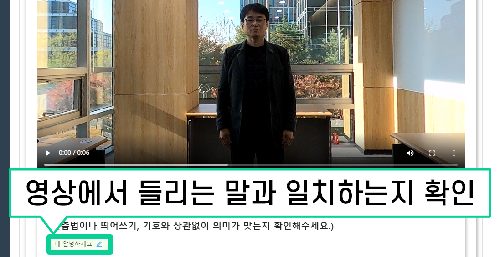
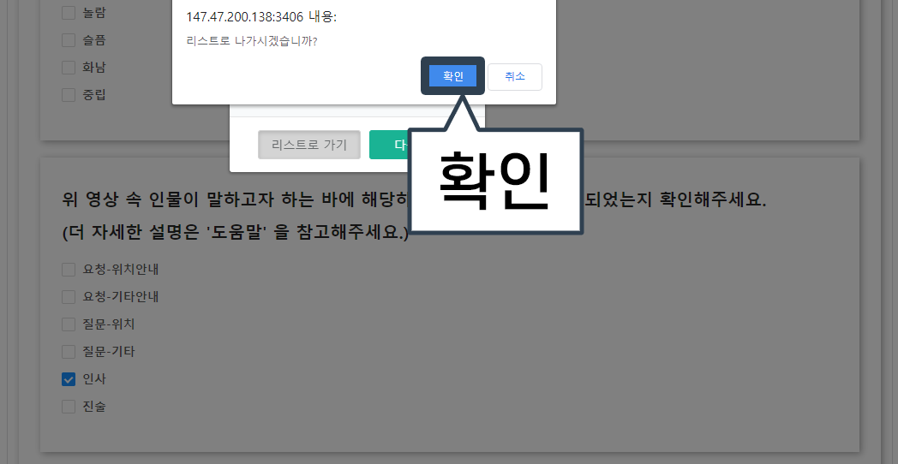
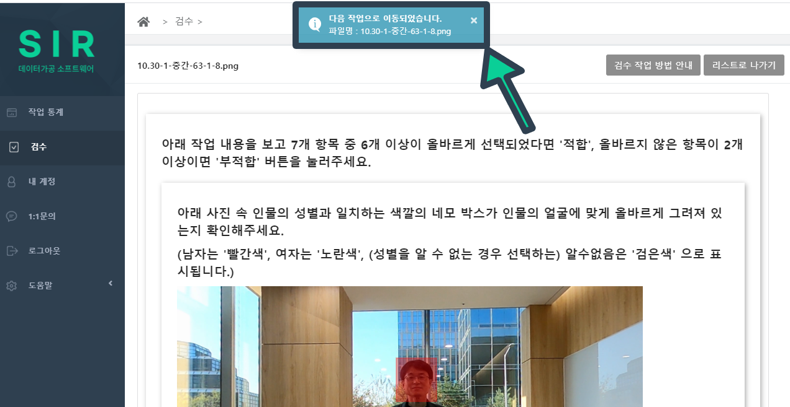
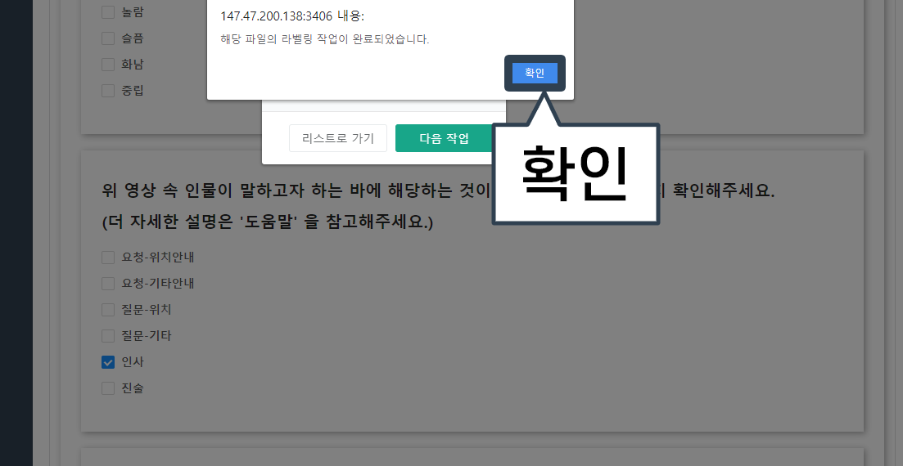
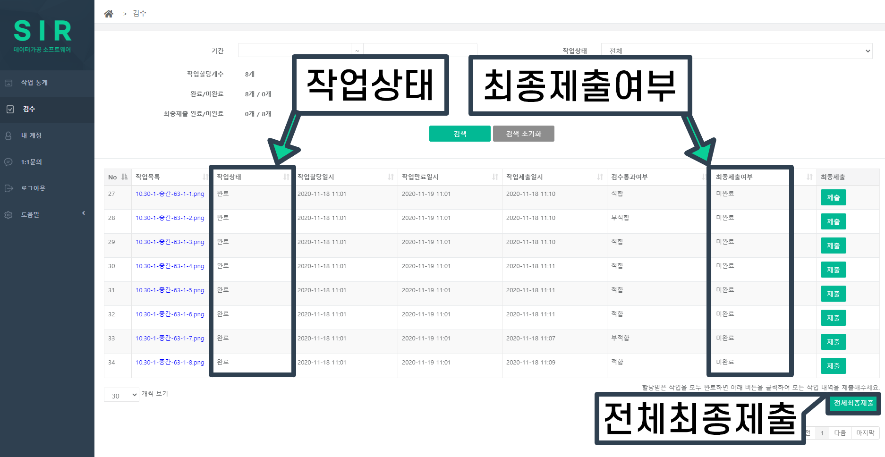
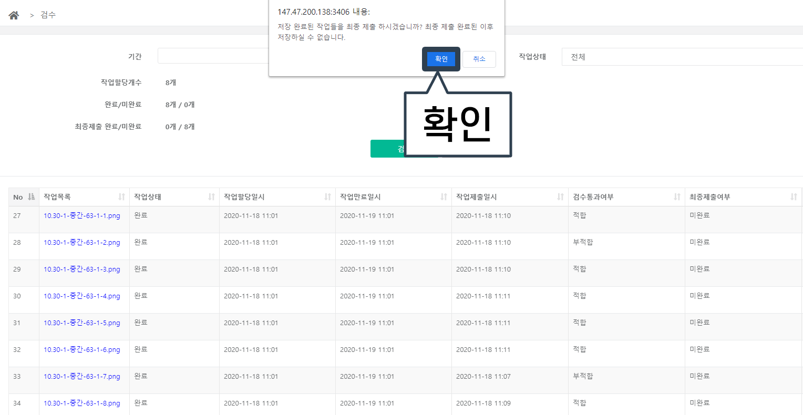
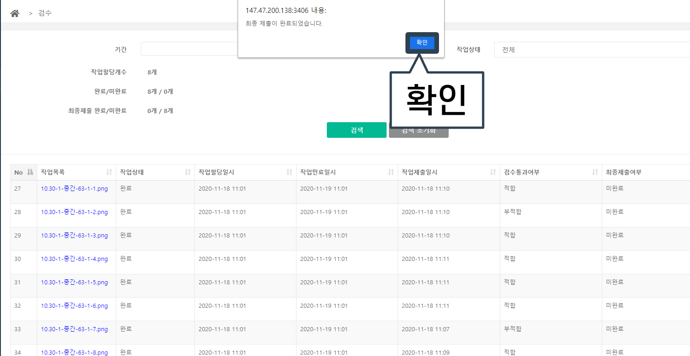
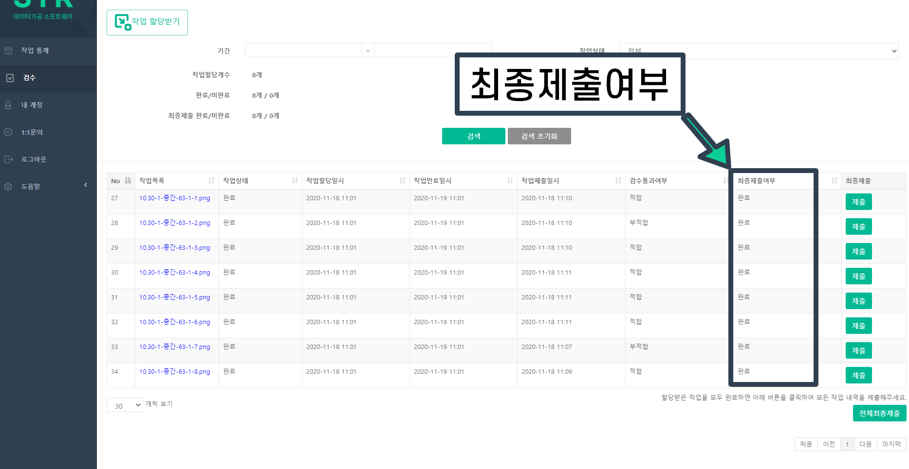

검수 작업 방법
1. 검수 버튼을 클릭합니다.
2. 작업목록에서 하나를 클릭합니다. (파란글씨 클릭)

3. 아래 주어진 사진처럼 이미지와 질문이 나타나면 작업을 시작합니다.

4. 사진 속 인물의 성별을 판단하고, 남자면 빨간색 네모박스가 얼굴에 맞게 그려져 있는지, 여자면 노란색 네모박스가 얼굴에 맞게 그려져 있는지 확인합니다.
(* 성별이 구별이 안될 경우, 검은색 네모박스가 얼굴에 맞게 그려져 있는지 확인합니다.)

5. 작업자 당신을 기준으로, 사진 속의 인물이 바라보고 있는 방향이 올바르게 선택되었는지 확인합니다.
(* 당신을 바라보고 있으면 “앞”, 등을 돌리고 있으면 “뒤”, 나머지 방향은 아래 사진을 참고하여 올바른 방향이 선택되었는지 확인합니다.)

6. 사진 속 인물의 표정에서 느껴지는 감정이 올바르게 선택되었는지 확인합니다.
(* 해당 인물의 감정은 작업자가 보고 느끼는 대로 판단합니다.)
7. 동영상을 시청하고 영상 속 인물이 하는 말과 텍스트가 일치하는지 확인합니다.
8. 동영상 속 인물이 하는 말(목소리)에서 느껴지는 감정이 올바르게 선택되었는지 확인합니다.
(* 해당 인물의 감정은 작업자가 듣고 느끼는 대로 판단합니다.)
9. 동영상 속 인물이 말하고자 하는 바에 해당하는 선택지가 올바르게 선택되었는지 확인합니다.
(* 더 자세한 설명은 오른쪽 더보기 버튼을 클릭하여 확인할 수 있습니다.) [더보기]
1. ‘요청’ 이란 대답과 행동을 동시에 요구하는 경우를 말합니다.
1-1. 단순히 위치만 물어보는 것이 아니라 해당 위치로 직접 안내를 요청하는 경우에 ‘요청-위치안내’ 를 선택합니다.
예) 응급실까지 데려다 주세요. / 서울대학교까지 가고 싶어요.
1-2. ‘요청-위치안내’ 에 해당하는 경우를 제외한 모든 안내 요청은 ‘요청-기타안내’ 를 선택합니다.
예) 체크인하려고 하는데요.
2. ‘질문’ 이란 대답 외의 행동을 요구하지 않는 경우를 말합니다.
2-1. 단순히 위치에 대한 정보만 요구할 경우 ‘질문-위치’ 를 선택합니다.
예) 응급실이 어디에 있나요? / 서울대학교로 가려면 어디로 가야하죠?
2-2. ‘질문-위치’ 에 해당하는 경우를 제외한 모든 정보 요구는 ‘질문-기타’ 를 선택합니다.
예) 이게 정말 200년된 작품이라고요?
3. ‘인사’ 란 만나거나 헤어질 때 하는 말을 의미합니다.
예) 안녕하세요. / 안녕히 가세요.
4. ‘진술’ 이란 1~3번의 경우 중 하나도 해당되지 않는 경우를 말합니다.
예) (감사인사) 감사합니다. / 네, 맞아요. / 멋지네요.

10. 동영상 속 인물이 작업자 당신과 이야기하는 것처럼 느껴졌다면 ‘네’, 아니면 ‘아니오’ 로 생각하고, 질문에 선택된 답변이 작업자 당신의 생각과 일치하는지 확인해주세요.
11. 모든 항목(7가지 항목)에서 작업이 잘못된 부분(올바르지 않은 답변 선택 / 영상에서 들리는 말과 일치하지 않는 글)이 2가지 이상이라면 '부적합', 모든 항목(7가지 항목)에서 6가지 항목 이상 답변이 올바르다면 ‘적합’ 버튼을 클릭합니다.

12-1. ‘부적합’ 버튼을 클릭하면 아래 사진과 같은 팝업창이 뜨는데 확실하게 틀린 항목이 2가지 이상이라고 판단되면 ‘확인’ 버튼을 눌러 계속합니다.

12-2. ‘적합’ 버튼을 클릭하면 아래 사진과 같은 팝업창이 뜨는데 6가지 항목 이상이 확실하게 맞다고 판단되면 ‘확인’ 버튼을 눌러 계속합니다.
13. ‘확인’ 버튼을 클릭하면 아래 사진과 같이 '리스트로 가기' 또는 '다음 작업' 버튼을 클릭할 수 있습니다. 작업을 이어서 하시려면 '다음 작업', 작업 목록을 확인하시려면 '리스트로 가기' 를 선택합니다.

14-1. '리스트로 가기' 를 선택할 경우, 아래 사진과 같은 화면이 뜨고 '확인' 을 클릭하면 작업 목록으로 넘어가게 됩니다.
14-2-1. '다음 작업' 을 선택할 경우, 이후 작업이 남아있으면 다음 작업으로 넘어가고 다음과 같은 창이 뜨게 됩니다.
14-2-2. '다음 작업' 을 선택할 경우, 이후 작업이 남아있지 않으면 아래 사진과 같은 화면이 뜨는데 '확인' 을 클릭하고 다시 ‘리스트로 가기’를 통해 작업목록으로 나갑니다.
15. 작업을 모두 완료했다면, ‘작업상태’ 가 모두 ‘완료’ 인지 확인하고, ‘최종제출여부’ 가 ‘미완료’ 라면 아래 ‘전체최종제출’ 버튼을 눌러 모든 작업 내역을 제출합니다.
16. ‘전체최종제출’ 버튼을 누르면 아래와 같은 팝업이 뜨는데 ‘확인’ 버튼을 눌러 최종제출을 완료합니다.
17. 최종제출이 완료되면 아래와 같은 팝업창이 뜨게 되고 다시 한번 ‘확인’ 버튼을 눌러 마무리해줍니다.
18. 이제 작업이 모두 끝났으며, ‘최종제출여부’ 가 모두 ‘완료’ 로 바뀐 것을 확인할 수 있습니다.
